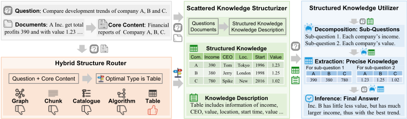
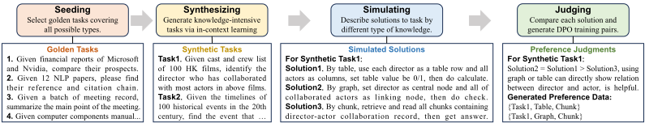
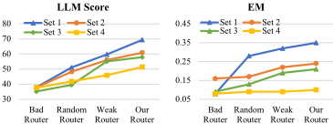

StructRAG：通过推理时混合信息结构化提升 LLM 的知识密集型推理能力
现有 RAG 方法在知识密集型推理任务上表现不佳，因为所需信息大量散落在长文档各处，检索出的 chunk 噪声大且难以支撑全局推理。StructRAG 受认知负荷理论与认知匹配理论启发，在推理时先由 hybrid structure router 按任务从 table、graph、algorithm、catalogue、chunk 五种结构中选出最优类型，再由 LLM 将原始文档重构为该结构化格式，最后通过问题分解与精确知识抽取完成答案推理；路由器通过'合成-模拟-评判'流水线构造偏好数据并用 DPO 训练。实验显示 StructRAG 在 Loong 与 Podcast Transcripts 上达到 SOTA，且文档越长、任务越复杂提升越大（Set 2/3/4 分别提升约 15/15/22），延迟明显低于 GraphRAG。对团队而言，这是'结构化上下文组织 + RAG 增强'的直接参考，可落地到知识库问答与多文档分析场景。
现有 chunk-based RAG 难以应对知识密集型推理任务：解决任务所需的有用信息大量散落在文档的多个位置（文档数可超过 20、总 token 可达 200K），标准 RAG 难以准确检索所有相关文本块，检索结果含大量噪声，且无法捕获信息间关联，导致 LLM 难以识别关键信息并进行整合性全局推理。
StructRAG 框架包含三个模块：(1) hybrid structure router——依据问题与文档核心内容（各文档标题或首句）从五种候选结构中选择最优类型：table（markdown，统计类任务）、graph（head-relationship-tail 三元组，长链推理）、algorithm（伪代码，规划类）、catalogue（层级编号文本，汇总类）、chunk（普通文本，单跳任务）；(2) LLM-based scattered knowledge structurizer——将散落在原始文档中的知识抽取并重构为所选类型的结构化知识，并生成整体描述；(3) structured knowledge utilizer——对复杂问题做分解为子问题、从结构化知识中精确抽取知识、再整合推理出最终答案。核心的路由器采用 DPO 算法训练（无需额外 reward model），训练数据通过'任务合成-方案模拟-偏好评判'（synthesizing-simulating-judging）流水线自动构造偏好对（中英文共 900 条），基于 Qwen2-7B-Instruct 用 trl 实现；structurizer 与 utilizer 直接使用 Qwen2-72B-Instruct 并以 vllm 部署为 API。
在 Loong 基准上取得 SOTA，且相比基线在 Set 2、Set 3、Set 4（文档总长度递增、信息更分散）上分别取得约 15、15、22 的提升，说明文档越长、信息越散提升越显著
消融实验：去掉 hybrid structure router（随机路由）后总分从 60.38 降至 45.33；去掉 utilizer（直接拼接结构化知识与原问题）降至 55.94，说明路由器是最核心模块
固定单一结构类型均劣于按任务选择最优类型：仅用 chunk 时从 60.38 降至 53.92（降幅最小），固定 graph/table/algorithm/catalogue 的下降更显著
在 Podcast Transcripts 汇总任务上，StructRAG 在 comprehensiveness、diversity、empowerment、directness 四个维度的 LLM-judged head-to-head win rate 上平均优于所有基线（Long-Context、RAG、RQ-RAG、GraphRAG）
效率报告：StructRAG 总延迟（构建+读取）略高于 RQ-RAG，但明显快于 GraphRAG
路由器仅用 900 条合成偏好数据做 DPO 训练（Qwen2-7B-Instruct，学习率 1e-5，3 个 epoch）即显著优于 zero-shot 与 few-shot 路由
与 chunk-based RAG 及固定使用图/三元组结构的 GraphRAG 类方法不同，StructRAG 提出混合信息结构化机制：不预设单一知识结构，而是按任务需求在五种结构类型中动态选择最优的一种，并用 DPO 训练的结构路由器做该决策；同时设计了无需真实标注数据的'合成-模拟-评判'偏好数据构造流水线。方法动机来自认知负荷理论（人类将分散信息总结为结构化知识以缩短推理路径）与认知匹配理论（不同任务适合不同结构类型），属于推理时的信息结构化而非检索策略改进。
相关度级别：high
命中能力域：3.1 上下文工程与记忆 | 3.5 评测与可靠使用
理由：论文核心正是 3.1 域的 RAG/检索增强与结构化上下文组织：面对总长可达 200K token、信息高度散落的多文档输入，先按任务把原始文档重构为 table/graph/algorithm/catalogue/chunk 等结构化上下文再做推理，直接对应团队'上下文的组织与管理''长上下文策略''结构化上下文组织'的技术栈与知识库问答工程场景。其 LLM-as-judge 0-100 打分 + EM 的组合评测、构建/读取两段延迟的效率对比，也与 3.5 域的评测方法与成本效率优化相关。此外，用合成偏好数据 + DPO 训练一个'上下文组织策略路由器'的范式，对不训练模型、专注把模型用好的团队有很强的借鉴价值。
建议动作：深入精读并做内部分享
arXiv:2410.08815v2 [cs.CL] 25 Oct 2024
Zhuoqun Li 1 , 2 , Xuanang Chen 1 , Haiyang Yu 3 , Hongyu Lin 1 , Yaojie Lu 1 , Qiaoyu Tang 1 , 2 , Fei Huang 3 , Xianpei Han 1 , Le Sun 1 , Yongbin Li 3
1 中国科学院软件研究所中文信息处理实验室
2 中国科学院大学
3 阿里巴巴集团
{ lizhuoqun2021,chenxuanang,hongyu,luyaojie } @iscas.ac.cn
{ tangqiaoyu2020,xianpei,sunle } @iscas.ac.cn
{ yifei.yhy,f.huang,shuide.lyb } @alibaba-inc.com
检索增强生成（Retrieval-Augmented Generation, RAG）是在许多基于知识的任务中有效增强大语言模型（LLMs）的关键手段。然而，现有 RAG 方法在知识密集型推理任务上表现不佳，因为这些任务所需的有用信息高度分散。这一特性使得现有 RAG 方法难以在这种含噪增强下准确识别关键信息并进行全局推理。在本文中，受认知理论的启发——即人类在处理知识密集型推理时会将原始信息转化为各种结构化知识——我们提出了一种新框架 StructRAG，它能够为当前任务识别最优的结构类型，将原始文档重构为该结构化格式，并基于所得结构进行答案推断。在多种知识密集型任务上的大量实验表明，StructRAG 达到了最先进的性能，尤其在具有挑战性的场景中表现突出，展示了其作为在复杂现实应用中增强 LLMs 的有效解决方案的潜力。https://github.com/Li-Z-Q/StructRAG
随着深度学习技术的进步，大语言模型（LLMs）在自然语言任务中展现出相当强的优势，并被广泛应用于复杂的现实场景中（OpenAI et al., 2024; Yang et al., 2024a）。然而，由于缺乏领域特定知识、实时更新的信息以及专有知识，它们在事实性任务中仍然存在局限（Huang et al., 2023; Sui et al., 2024）。为解决这一问题，检索增强生成（RAG）方法被开发出来，以有效提供必要的外部知识（Yu et al., 2022; Gao et al., 2024）。通常，RAG 方法会将原始文档切分为较短的文本块，基于查询检索出最相关的文本块，然后利用这些文本块使 LLMs 生成可靠的答案（Ma et al., 2023; Li et al., 2024a）。凭借这一简单直接流程所带来的出色性能，RAG 方法被普遍应用于各类基于知识的问答任务中（Shi et al., 2024; Wang et al., 2024b）。
遗憾的是，由于解决这些任务所需的相关信息具有分散性，当前的 RAG 方法无法有效处理知识密集型推理任务（Kuratov et al., 2024; Yang et al., 2024b）。具体而言，知识密集型推理任务往往需要大量有用信息，而这些信息分散在所提供文档的许多位置；与此同时，模型在检索到有用信息之后还需要进行综合推理（Yang et al., 2024b; Wang et al., 2024a）。以财务报告分析为例，在给定大量财务文档并需要比较多家公司发展趋势的情况下，LLMs 需要挖掘出散布在原始文档各处的所有相关财务指标，然后通过仔细比较和综合分析这些指标来生成洞察。在这类场景中，标准 RAG 方法在准确检索所有相关文本块（其中可能包含大量噪声）以及整合多条关键信息进行推理方面面临挑战，导致在这些任务上的表现不尽如人意。

从人类视角来看，人们并非通过简单阅读原始文本来解决知识密集型推理任务（Johnson-Laird, 1986; Paivio, 1990）。正如认知负荷理论所指出的，人类通常会将文档中分散的信息总结为结构化知识，进而利用这些知识缩短推理路径并做出更准确的判断（Sweller, 1988; Chandler & Sweller, 1991）。此外，认知匹配理论（cognitive fit theory）表明，人类倾向于针对不同任务使用不同类型的结构化知识，例如在统计分析任务中使用表格，在长链推理中使用图（Vessey, 1991; Umanath & Vessey, 1994）。近年来，LLMs 的快速发展为直接使用这些模型构建各种知识结构奠定了基础（Li et al., 2023; Jain et al., 2024）。与此同时，许多研究表明，LLMs 在利用信息和解决复杂问题的方式上与人类存在相似之处（Wei et al., 2022; Li et al., 2024b）。这些启发我们探索 LLMs 能否在推理过程中采用类人的思维过程，将分散的信息转换为各种结构格式，从而更好地服务于知识密集型推理任务。
受此启发，我们提出了 StructRAG，它采用一种混合信息结构化机制，根据任务需求以最合适的格式构建和利用结构化知识。如图 1 所示，StructRAG 框架由三个模块组成，依次用于识别最合适的结构类型、以该格式构建结构化知识，以及利用该结构化知识推断最终答案。首先，考虑到不同的结构类型适用于不同的任务，我们提出了一种混合结构路由器（hybrid structure router），根据当前任务的问题和文档信息确定最合适的结构类型。其次，鉴于构建结构化知识十分复杂，需要强大的理解与生成能力，我们采用基于 LLM 的分散知识结构化器（scattered knowledge structurizer）将原始文档转换为最优类型的结构化知识。最后，由于知识密集型推理任务中的问题往往是难以直接求解的复杂复合问题，我们使用结构化知识利用器（structured knowledge utilizer）进行问题分解和精确知识提取，以实现更准确的答案推断。
StructRAG 的核心在于混合结构路由器能够为每个输入任务准确选择最合适的结构类型。为了使路由器具备这一能力，我们提出了一种针对混合结构路由器的训练方法。受强化学习在训练 LLMs 执行决策任务方面成功应用的启发（Havrilla et al., 2024; OpenAI, 2024），我们采用 DPO 算法来训练路由器模块，该算法遵循强化学习原则，且无需额外的奖励模型（Rafailov et al., 2023; Allam, 2024）。然而，用于让模型学习如何选择最优结构类型的训练数据并不充足，而在现实世界中收集足够多的此类数据同样颇具挑战。为解决这一问题，我们提出了一种构建偏好训练数据的新颖流水线，其中涉及任务合成、解法模拟和偏好判断，以生成高质量的合成数据，从而增强路由器选择合适结构类型的能力。
在实验中，我们在多种知识密集型推理任务上对 StructRAG 进行了评估，并将其与若干强大的 RAG 基线方法进行比较。结果表明，StructRAG 达到了最先进的性能，且随着任务复杂度的增加，其提升愈发显著。这证实了 StructRAG 是应对具有挑战性的知识密集型任务的稳健解决方案。此外，与近期的 Graph RAG 方法相比，StructRAG 不仅在更广泛的任务范围内展现出更优的性能，而且平均运行速度也显著更快。
RAG 技术在大语言模型（LLMs）时代通过提供外部知识来辅助回答问题并减少幻觉，从而取得了良好的性能 (Jiang et al., 2023; Asai et al., 2023; Gao et al., 2024; Chen et al., 2024)。RAG 的初始策略是依据查询使用检索器从知识库中搜索并保留高度相关的文本块（chunk），随后将这些文本块作为外部知识输入生成模块，以提升其性能 (Qi et al., 2019; Lewis et al., 2020; Gur et al., 2021; Yu et al., 2022)。为了提升 RAG 的效果，一些方法引入了迭代式 RAG，提出了诸如查询扩展与查询改写等多种增强手段 (Ma et al., 2023; Li et al., 2024a; Chan et al., 2024; Shi et al., 2024)；另一些方法则尝试改进检索与生成之间的协同配合 (Qian et al., 2024; Su et al., 2024; Luo et al., 2024; Zhang et al., 2024)。尽管现有方法在 HotpotQA 等多跳任务上取得了强劲的性能，但基于文本块的 RAG 仍难以应对知识密集型任务 (Wang et al., 2024a)。这是因为文本块必然包含过多的文本噪声，且无法捕捉信息之间的相互关联，因此 LLMs 无法有效利用增强后的知识。
近年来，为了辅助 LLMs 处理复杂的问答任务，一些工作将图结构引入 RAG 系统 (Edge et al., 2024; Panda et al., 2024; Peng et al., 2024)。一类方法使用预先构建的知识图谱，基于查询提取子图，随后将其编码为软提示（soft prompts）或展平为纯文本供生成模块使用 (Tang et al., 2024; He et al., 2024; Guan et al., 2024)。另一类方法则根据查询需求从给定的文本文档中抽取实体-关系三元组以构建图结构，进而用于知识增强 (Fang et al., 2024; Edge et al., 2024; Panda et al., 2024)。尽管这些方法在多跳问答任务上显著提升了性能，但它们仅通过三元组的形式关注基于图的知识，从而限制了其在知识密集型推理任务的各种领域和应用中的实际适用性。
如前所述，由于知识密集型推理任务中信息高度分散，检索增强生成（RAG）中传统的检索模块可能检索到包含大量文本噪声的文本块，使得生成模块难以提取有用信息进行推理。受关于人类如何处理此类任务的认知理论启发，本文提出了 StructRAG，它利用一种混合信息结构化机制，以最优形式构建并利用结构化知识。具体而言，如图 1 所示，StructRAG 首先采用混合结构路由器（hybrid structure router）为给定任务识别最合适的结构类型，然后采用分散知识结构化器（scattered knowledge structurizer）将原始文档转换为该格式的结构化知识，最后引入结构化知识利用器（structured knowledge utilizer）将复杂问题分解为更简单的子问题，从而在结构化知识上实现更准确的推理。
任务形式化。本文涉及的知识密集型推理任务以一个问题 q 和大规模文档集合 D 作为输入，目标是基于所提供的文档推导出答案 a，可表示如下：
其中 m 为文档数量，可超过 20，总 token 数最高可达 200K。因此，这类任务最显著的特点是有用信息分散在所提供的各篇文档中，要求模型基于大规模相关数据进行复杂推理。例如，在利用一批财务报告比较多家公司的发展趋势时，该任务需要检索散布于文档各处的各类财务指标，进而对这些指标进行细致比较。这需要考虑诸如不同指标的相对重要性、数值差异的大小等因素。因此，知识密集型推理任务带来了重大挑战。
混合结构路由器。从人类视角来看，在解决知识密集型推理任务时，人们倾向于使用与所面临任务的具体需求最匹配的结构化知识类型。为此，StructRAG 引入了混合结构路由器 R 来选择最优的结构类型。具体而言，该路由器利用问题 q 以及文档 D 的核心内容 C 来进行决策并生成最合适的结构类型 t，因为一次性处理整个文档集合并不现实。
核心内容 C 是每个文档 d ( i ) 的标题或开头几句内容的浓缩。在我们的工作中，针对五类知识密集型任务共有五种候选结构类型：统计任务采用表格，长链任务采用图，规划任务采用算法，摘要任务采用目录，简单的单跳任务采用文本块。考虑到路由器在整体框架中的核心作用，我们的工作设计了一种基于 DPO 的训练方法来开发擅长知识类型决策的路由器，具体细节见第 4 节。
分散知识结构化器（Scattered Knowledge Structurizer）。在确定最合适的结构类型后，StructRAG 抽取散布在原始文档中的文本知识，并将其重构为结构化知识。这一过程需要对所有原始文档的全面理解以及对信息的精确格式化，因此是一个具有挑战性且灵活的问题。为此，StructRAG 采用基于大语言模型（LLM）的分散知识结构化器来辅助结构化过程。具体而言，如公式 3 所示，结构化器 S 以问题 q、所选类型 t 以及每个原始文档 d ( i ) 为输入，借助 LLM 强大的理解与生成能力从文档中抽取结构化知识 k ( i ) t。此外，还会生成对结构化知识 k t 的描述。
此后，所有输出的结构化知识将被汇总为整体 K t = { k ( i ) t } i m =1，并构建出整个结构化知识的整体描述 B t = { b ( i ) t } i m =1。就各类结构的具体表示形式而言，表格采用 markdown 格式，图采用头-关系-尾三元组列表的形式，文本块采用常规文本，算法采用伪代码，目录则采用带有层级编号（例如 Section One、1.1、1.1.2）的文本作为明确的章节标识。
结构化知识利用器（Structured Knowledge Utilizer）。在获得最优类型的结构化知识后，StructRAG 执行推理以回答问题。鉴于问题可能具有高度的组合性，这可能会阻碍对结构化知识中相关信息的识别与使用。为此，StructRAG 采用基于 LLM 的结构化知识利用器来辅助问题分解、精确知识抽取和最终答案推理。具体而言，利用器的分解过程以原始问题 q 和结构化知识的整体描述 B t 为输入，将问题分解为若干简单且直观的子问题 ˆ q ( j )。接下来，抽取过程旨在从整体结构化知识 K t 中为每个子问题 ˆ q ( j ) 找出精确知识 ˆ k ( j ) t。最后，推理过程整合所有子问题及其抽取出的精确知识以生成最终答案 a，可表示如下：
其中 n 为子问题的数量，ˆ Q 为所有子问题的集合，ˆ K t 为所有子问题的完整精确知识，而 U decompose、U extract 和 U infer 分别表示分解、抽取和推理的过程。关于使用器（utilizer）的更多细节见附录 A.3。

In the StructRAG framework described above, the core factor is accurately determining the most suitable structure type based on the input task, and the performance of the hybrid structure router directly influences the overall effectiveness of the framework. Therefore, to achieve a highperformance router, we propose a training method to enhance the ability of LLMs in identifying the suitable structure type of knowledge. Specifically, given the strong capabilities of reinforcement learning in decision-making scenarios, we train the router using the DPO algorithm, which achieves results similar to reinforcement learning while avoiding the need for additional reward models. Regarding training data, since there is no existing preference data for the optimal structure type selection task, we design a synthesizing-simulating-judging method to efficiently construct preference pairs for training. A detailed explanation is provided in the following paragraphs, along with examples and prompts in the Appendix A.1.
Data Constructing. Due to the scarcity of training data for selecting the optimal structure type in the current NLP community, we employ a synthesizing-simulating-judging method to construct preference pairs for training the router. Specifically, as illustrated in Figure 2, given several manually collected seed tasks that covering the possible structure types, we first use LLMs to synthesize a set of new tasks by the in-context learning method, where each task contains a question and core context for documents. Then, for each synthetic task, LLMs is employed to simulate the process of addressing this task by structured knowledge in different types, thus getting different simulated solutions. Finally, a LLM-based judge compares these simulated solutions for solving the task, generating preference pairs regarding the structure types. Each constructed data entry includes a question, the core contents of documents, the chosen structure type, and the rejected structure type, as expressed as follows:
where t w and t l are chosen structure type and rejected structure type, respectively. In addition, synthetic preference pairs include both English and Chinese data in order to improve the universality.
Preference Training. Inspired by the success of using reinforcement learning to train LLMs for decision-making tasks, we employ the DPO algorithm to train the router module, which can get the same effectiveness as reinforcement learning without adding additional reward models. Specifically, the input for training the router includes a question and the core contents of documents, and the output is one kind of structure type (e.g., 'table', 'graph'). As described in last paragraph, we simulate and construct a set of preference pairs for DPO training, which can be formulated as following:
其中，π θ 和 π ref 分别为目标策略和参考策略，β 为超参数。正如后文所分析的，这种偏好训练使模型能够区分不同类型的知识及其对给定任务的适用性，从而相比零样本（zero-shot）和少样本（few-shot）设置取得了更好的性能。
与基线方法对比的结果如表 1 和表 2 所示，主要有两个结论：
1 https://github.com/MozerWang/Loong
2 https://github.com/huggingface/trl
3 https://pypi.org/project/vllm/
4 https://github.com/chanchimin/RQ-RAG
5 https://pypi.org/project/graphrag/
| Method.Method | Spot..LLMScore | Spot..EM | Comp..LLMScore | Comp..EM | Clus..LLMScore | Clus..EM | Chain..LLMScore | Chain..EM | Overall.LLMScore | Overall.EM |
|---|---|---|---|---|---|---|---|---|---|---|
| Set 1 (10K-50K Tokens) | Set 1 (10K-50K Tokens) | Set 1 (10K-50K Tokens) | Set 1 (10K-50K Tokens) | Set 1 (10K-50K Tokens) | Set 1 (10K-50K Tokens) | Set 1 (10K-50K Tokens) | Set 1 (10K-50K Tokens) | Set 1 (10K-50K Tokens) | Set 1 (10K-50K Tokens) | Set 1 (10K-50K Tokens) |
| Long-context (Yang et al., 2024a) | 68.49 | 0.55 | 60.60 | 0.37 | 47.08 | 0.08 | 70.39 | 0.36 | 60.11 | 0.29 |
| RAG (Lewis et al., 2020) | 51.08 | 0.35 | 44.53 | 0.27 | 37.96 | 0.05 | 53.95 | 0.35 | 46.11 | 0.23 |
| RQ-RAG (Chan et al., 2024) | 72.31 | 0.54 | 48.16 | 0.05 | 47.44 | 0.07 | 58.96 | 0.25 | 53.51 | 0.17 |
| GraphRAG (Edge et al., 2024) | 31.67 | 0.00 | 27.60 | 0.00 | 40.71 | 0.14 | 54.29 | 0.43 | 40.82 | 0.18 |
| StructRAG (Ours) | 74.53 | 0.47 | 75.58 | 0.47 | 65.13 | 0.23 | 67.84 | 0.34 | 69.43 | 0.35 |
| Set 2 (50K-100K Tokens) | Set 2 (50K-100K Tokens) | Set 2 (50K-100K Tokens) | Set 2 (50K-100K Tokens) | Set 2 (50K-100K Tokens) | Set 2 (50K-100K Tokens) | Set 2 (50K-100K Tokens) | Set 2 (50K-100K Tokens) | Set 2 (50K-100K Tokens) | Set 2 (50K-100K Tokens) | Set 2 (50K-100K Tokens) |
| Long-context (Yang et al., 2024a) | 64.53 | 0.43 | 42.60 | 0.21 | 38.52 | 0.05 | 51.18 | 0.20 | 45.71 | 0.17 |
| RAG (Lewis et al., 2020) | 66.27 | 0.46 | 46.28 | 0.31 | 38.95 | 0.05 | 46.15 | 0.22 | 45.42 | 0.19 |
| RQ-RAG (Chan et al., 2024) | 57.35 | 0.35 | 50.83 | 0.16 | 42.85 | 0.03 | 47.60 | 0.10 | 47.09 | 0.10 |
| GraphRAG (Edge et al., 2024) | 24.80 | 0.00 | 14.29 | 0.00 | 37.86 | 0.00 | 46.25 | 0.12 | 33.06 | 0.03 |
| StructRAG (Ours) | 68.00 | 0.41 | 63.71 | 0.36 | 61.40 | 0.17 | 54.70 | 0.19 | 60.95 | 0.24 |
| Set 3 (100K-200K Tokens) | Set 3 (100K-200K Tokens) | Set 3 (100K-200K Tokens) | Set 3 (100K-200K Tokens) | Set 3 (100K-200K Tokens) | Set 3 (100K-200K Tokens) | Set 3 (100K-200K Tokens) | Set 3 (100K-200K Tokens) | Set 3 (100K-200K Tokens) | Set 3 (100K-200K Tokens) | Set 3 (100K-200K Tokens) |
| Long-context (Yang et al., 2024a) | 46.99 | 0.27 | 37.06 | 0.13 | 31.50 | 0.02 | 35.01 | 0.07 | 35.94 | 0.09 |
| RAG (Lewis et al., 2020) | 73.69 | 0.55 | 42.20 | 0.27 | 32.78 | 0.02 | 37.65 | 0.13 | 42.60 | 0.18 |
| RQ-RAG (Chan et al., 2024) | 50.50 | 0.13 | 44.62 | 0.00 | 36.98 | 0.00 | 36.79 | 0.07 | 40.93 | 0.05 |
| GraphRAG (Edge et al., 2024) | 15.83 | 0.00 | 27.40 | 0.00 | 42.50 | 0.00 | 43.33 | 0.17 | 33.28 | 0.04 |
| StructRAG (Ours) | 68.62 | 0.44 | 57.74 | 0.35 | 58.27 | 0.10 | 49.73 | 0.13 | 57.92 | 0.21 |
| Set 4 (200K-250K Tokens) | Set 4 (200K-250K Tokens) | Set 4 (200K-250K Tokens) | Set 4 (200K-250K Tokens) | Set 4 (200K-250K Tokens) | Set 4 (200K-250K Tokens) | Set 4 (200K-250K Tokens) | Set 4 (200K-250K Tokens) | Set 4 (200K-250K Tokens) | Set 4 (200K-250K Tokens) | Set 4 (200K-250K Tokens) |
| Long-context (Yang et al., 2024a) | 33.18 | 0.16 | 26.59 | 0.08 | 29.84 | 0.01 | 25.81 | 0.04 | 28.92 | 0.06 |
| RAG (Lewis et al., 2020) | 52.17 | 0.24 | 24.60 | 0.10 | 26.78 | 0.00 | 17.79 | 0.00 | 29.29 | 0.07 |
| RQ-RAG (Chan et al., 2024) | 29.17 | 0.08 | 40.36 | 0.00 | 26.92 | 0.00 | 34.69 | 0.00 | 31.91 | 0.01 |
| GraphRAG (Edge et al., 2024) | 17.50 | 0.00 | 26.67 | 0.00 | 20.91 | 0.00 | 33.67 | 0.33 | 23.47 | 0.05 |
| StructRAG (Ours) | 56.87 | 0.19 | 55.62 | 0.25 | 56.59 | 0.00 | 35.71 | 0.05 | 51.42 | 0.10 |
| Method.Method | Spot..LLMScore | Spot..EM | Comp..LLMScore | Comp..EM | Clus..LLMScore | Clus..EM | Chain..LLMScore | Chain..EM | Overall.LLMScore | Overall.EM |
| Compared Method Pair | Comprehensiveness | Diversity | Empowerment | Directness | Average |
|---|---|---|---|---|---|
| StructRAG vs. Long-context (Yang et al., 2024a) | 98 | 96 | 97 | 92 | 95.75 |
| StructRAG vs. RAG (Lewis et al., 2020) | 67 | 78 | 51 | 52 | 62 |
| StructRAG vs. RQ-RAG (Chan et al., 2024) | 67 | 75 | 50 | 46 | 59.5 |
| StructRAG vs. GraphRAG (Edge et al., 2024) | 61 | 68 | 42 | 41 | 53 |
| Compared Method Pair | Comprehensiveness | Diversity | Empowerment | Directness | Average |
在 Set 2、Set 3 和 Set 4 上分别取得了约 15、15 和 22 的提升。每个集合代表给定文档的总长度，其中 Set 1 最短，Set 4 最长。这意味着随着文档长度的增加，回答问题所需的信息变得更加分散，从而使推理过程更具挑战性。因此，这些结果表明，在文档更长、信息更分散的情况下，StructRAG 相比基线方法取得了更为显著的提升，证明了我们框架构建并使用最优类型结构化知识的能力对于复杂任务尤为有效。
为了验证 StructRAG 中各个模块的作用，我们进行了消融实验。如表 3 所示，'w/o router' 表示随机路由，'w/o structurizer' 表示仅使用文本块，'w/o utilizer' 表示将结构化知识与原始问题直接拼接后进行答案生成。可以得出以下结论：
| Method. | Set 1.LLMScore | Set 1.EM | Set 2.LLMScore | Set 2.EM | Set 3.LLMScore | Set 3.EM | Set 4.LLMScore | Set 4.EM | Overall.LLMScore | Overall.EM |
|---|---|---|---|---|---|---|---|---|---|---|
| StructRAG | 69.43 | 0.35 | 60.95 | 0.24 | 57.92 | 0.21 | 51.42 | 0.1 | 60.38 | 0.23 |
| w/o router | 51.09 | 0.28 | 48.28 | 0.17 | 39.52 | 0.13 | 41.83 | 0.1 | 45.33 | 0.17 |
| w/o structurizer | 64.97 | 0.29 | 52.17 | 0.17 | 53.18 | 0.19 | 44.24 | 0.1 | 53.92 | 0.19 |
| w/o utilizer | 68.23 | 0.29 | 59.73 | 0.24 | 53.29 | 0.19 | 35.77 | 0.1 | 55.94 | 0.22 |
| Method. | Set 1.LLMScore | Set 1.EM | Set 2.LLMScore | Set 2.EM | Set 3.LLMScore | Set 3.EM | Set 4.LLMScore | Set 4.EM | Overall.LLMScore | Overall.EM |

| Method | F1 | ACC |
|---|---|---|
| Hybrid Structure Router | 93.42 | 94.38 |
| Qwen2-7B-Instruct (zero-shot) | 50.04 | 54.25 |
| Qwen2-7B-Instruct (few-shot) | 65.59 | 66.12 |
| Qwen2-72B-Instruct (zero-shot) | 78.38 | 80.56 |
| Qwen2-72B-Instruct (few-shot) | 89.39 | 90.06 |
| Method | F1 | ACC |
移除路由器后，出现了从 60.38 到 45.33 的下降。相比之下，移除利用器仅导致较小的性能下降，从 60.38 降至 55.94。这表明，像现有方法那样仅对问题进行精炼，对知识密集型推理任务的提升有限；一个更有前景的方向是以合适的类型构建并使用结构化知识。
在本节中，我们进行了一些详细分析，包括路由器的性能与影响、使用固定结构类型的缺点、关于 EM rate 性能的案例研究，以及效率报告。
为了探究构建数据和进行 DPO 训练的必要性，以及混合结构路由器性能与整体 StructRAG 之间的关系，我们首先将我们的路由器与原始 LLM 进行比较，然后绘制了路由器与整体 StructRAG 得分的曲线。得出以下结论：
为了进一步验证包含混合结构类型而非固定单一类型的重要性，我们将框架中使用的结构类型在所有评估任务中冻结为 chunk、graph、table、algorithm 或 catalogue 之一。得出以下结论：
使用单一固定类型的知识无法在多样化任务上取得良好性能。根据表 5 中的实验结果可以看出，无论是得分还是精确匹配率，使用单一固定类型的表现都劣于根据输入任务需求选择最优结构类型。相比之下，仅使用 chunk 时性能下降最小，得分从 60.38 降至 53.92；而在其他情况下，性能下降更为显著。这可以证明认知契合理论（cognitive fit theory）在大语言模型（LLM）中的有效性，即以最合适的类型使用结构化知识能够有效提升问题解决能力。
| Method. | Set 1.LLMScore | Set 1.EM | Set 2.LLMScore | Set 2.EM | Set 3.LLMScore | Set 3.EM | Set 4.LLMScore | Set 4.EM | Overall.LLMScore | Overall.EM |
|---|---|---|---|---|---|---|---|---|---|---|
| StructRAG | 69.43 | 0.35 | 60.95 | 0.24 | 57.92 | 0.21 | 51.42 | 0.1 | 60.38 | 0.23 |
| w/ only table | 48 | 0.23 | 55.19 | 0.24 | 50.35 | 0.19 | 38.44 | 0.12 | 49.66 | 0.21 |
| w/ only graph | 30.59 | 0.09 | 24.05 | 0.05 | 17.46 | 0.03 | 20.96 | 0.04 | 22.71 | 0.05 |
| w/ only chunk | 64.97 | 0.29 | 52.17 | 0.17 | 53.18 | 0.19 | 44.24 | 0.1 | 53.92 | 0.19 |
| w/ only catalogue | 30.49 | 0.1 | 36.36 | 0.13 | 36.77 | 0.12 | 23.75 | 0.03 | 33.26 | 0.1 |
| w/ only algorithm | 43.53 | 0.24 | 32.86 | 0.08 | 31.59 | 0.13 | 16.67 | 0.04 | 32.32 | 0.12 |
| Method. | Set 1.LLMScore | Set 1.EM | Set 2.LLMScore | Set 2.EM | Set 3.LLMScore | Set 3.EM | Set 4.LLMScore | Set 4.EM | Overall.LLMScore | Overall.EM |
| Method | Constructing | Reading | Total Latency |
|---|---|---|---|
| RQ-RAG | 7.8 | 1.2 | 9 |
| GraphRAG | 215.3 | 1.8 | 217.1 |
| StructRAG (Ours) | 8.2 | 1.5 | 9.7 |
| Method | Constructing | Reading | Total Latency |
| Raw | depreciation of $ 1,308,463 and share-based compensation expense of $ 537,197 ) in 2024 ... | depreciation of $ 1,308,463 and share-based compensation expense of $ 537,197 ) in 2024 ... | depreciation of $ 1,308,463 and share-based compensation expense of $ 537,197 ) in 2024 ... | depreciation of $ 1,308,463 and share-based compensation expense of $ 537,197 ) in 2024 ... | depreciation of $ 1,308,463 and share-based compensation expense of $ 537,197 ) in 2024 ... |
|---|---|---|---|---|---|
| Structured | Year. 2024 | Com. A | CEO Judy | Depreciation 1308463 | Compensation 537197 |
| Raw | depreciation of $ 1,308,463 and share-based compensation expense of $ 537,197 ) in 2024 ... | depreciation of $ 1,308,463 and share-based compensation expense of $ 537,197 ) in 2024 ... | depreciation of $ 1,308,463 and share-based compensation expense of $ 537,197 ) in 2024 ... | depreciation of $ 1,308,463 and share-based compensation expense of $ 537,197 ) in 2024 ... | depreciation of $ 1,308,463 and share-based compensation expense of $ 537,197 ) in 2024 ... |
根据表 1 中的实验结果，StructRAG 在总体得分上超越了各基线方法，但在七个子情形下的精确匹配率上表现不佳。因此，我们分析了 StructRAG 方法获得较高得分却未能实现精确匹配的一些案例。其原因主要在于结构化过程可能会改变原始信息的文本格式。如表 5 所示，结构化知识与原始信息之间存在一些措辞差异（例如，表格中原始的 '$ 1,308,463' 变为 '138463'）。直观来看，这与常识相符：结构化器（structurizer）是一个概率性语言模型而非基于规则的模型，因此某些可能的文本损失或许难以避免，而 GraphRAG 方法的输出也表现出类似问题。
在本节中，我们报告了 StructRAG 的平均延迟，并将其与 RQ-RAG（Chan et al., 2024）和 GraphRAG（Edge et al., 2024）进行比较。该延迟包含两个组成部分：第一部分是构建延迟（constructing latency），指 RQ-RAG 迭代检索文本块（chunks）、GraphRAG 构建图、以及 StructRAG 确定最优知识类型并构建相应结构的过程；第二部分是读取延迟（reading latency），指利用增强后的知识生成最终答案的过程。如表 4 所示，StructRAG 的延迟略高于 RQ-RAG，但明显快于 GraphRAG。因此，StructRAG 是一种兼具高性能与可行实现速度的框架。
本文注意到现有 RAG 方法在知识密集型推理任务中的局限性，并受关于人类如何解决此类任务的认知理论的启发，提出了一种新框架——基于混合信息结构化（hybrid information structurization）的 StructRAG，该框架能够以最优格式构建并利用结构化知识作为增强。StructRAG 包含一个混合结构路由器（hybrid structure router），用于精确选择最优结构类型；随后是一个分散知识结构化器（scattered knowledge structurizer），用于将原始文档转换为结构化知识；最后是一个结构化知识利用器（structured knowledge utilizer），用于分解复杂问题并基于所构建的结构化知识推理出最终答案。此外，为了获得高性能的混合结构路由器，我们通过“合成—模拟—评判”（synthesizing-simulating-judging）流水线构建训练数据，然后采用 DPO 算法实施偏好训练。在大量知识密集型推理任务上的实验表明，StructRAG 是一种有效的解决方案，达到了最先进（SOTA）性能，并且在信息严重分散的场景中能够取得大幅提升。因此，本文聚焦于混合结构化知识，为未来开发更强大的 RAG 系统提供了一个有前景的方向。
考虑到目前缺乏能够根据任务需求确定最优结构类型的训练数据，且在真实场景中收集此类数据十分困难，我们专门针对混合结构路由器设计了一条用于 DPO 训练的数据“合成—模拟—评判”流水线。在具体实现上，我们构建了若干提示来驱动 LLM 的这三个过程，如图 8 所示。
考虑到从大量零散信息中构建各类结构化知识是一项需要强大理解与生成能力的复杂任务，且 LLM 在以往工作中已展现出整合结构化知识的良好能力，我们设计了提示来驱动 LLM 完成这一过程，如图 7 所示。
考虑到知识密集型推理中的问题可能是复杂的组合任务，将其分解为多个更简单的子问题能够更有效地利用结构化知识进行推理。因此，我们设计了提示来驱动 LLM 实现问题分解与精确知识提取，如图 6 所示。
指令：根据 Requirement 部分中描述的要求，从 Raw Content 中提取必要的三元组。三元组应以单行形式输出，格式为：{{'head': '...', 'relation': '...', 'tail': ['...', '...']}}。注意：不要从文本中提取所有三元组，而是分析 Requirement 中提到的关系和实体，仅提取相关的三元组。此外，请确保输出中的 'head' 和 'tail' 尽可能完整。它们不仅可以由单个单词或短语组成，还可以是句子或文本段落。应尽量使其与原文保持一致，不使用任何缩写。示例：######## {{"head": "LLM4Vuln: A Unified Evaluation Framework for Decoupling and Enhancing LLMs\' Vulnerability Reasoning", "relation": "reference", "tail": ["Why Can GPT Learn In-Context? Language Models Implicitly Perform Gradient Descent as Meta-Optimizers.", "Can Large Language Models Be an Alternative to Human Evaluations?"]}} ######## 原始文档：{documents} 查询：{query} 输出：
指令：根据需求（Requirement）部分中描述的要求，从原始内容（Raw Content）中提取必要的算法伪代码。你必须遵循示例（Examples）中提供的推理过程和输出格式，确保伪代码中的每个操作都与原始文档中的具体信息相关联。注意：如果所描述的需求无法用伪代码解决，不要强行使用伪代码，而应直接列出能够满足这些需求的信息。示例：######## 初始化组件：Intel_CPU = “Intel 高性能多核 CPU” Huawei_CPU = “华为具备热管理功能的 AI 多任务 CPU” Apple_CPU = “与 macOS 无缝集成的苹果高效 CPU” Huawei_Monitor = - Fan_120mm = “120mm 标准散热风扇” Fan_140mm = “140mm 高效风扇” 评估用户需求：if 需要高性能 CPU：IF 用户需要高刷新率显示器：selected_CPU = Intel_CPU # 根据原始内容，Intel CPU 为高性能 ######## 原始文档：{documents} 查询：{query} 输出：
指令：根据需求部分中描述的要求，提取必要的目录结构，即一种层次化的摘要。层级数以及每一层的节点数量应根据具体上下文来确定。你必须遵循示例中提供的推理过程和输出格式。确保摘要的每一层都具有唯一的标识符以区分不同层级，并且每条摘要都足够详细。注意：你需要从原始内容中尽可能多地提取相关信息，包括需求部分中提到的实体名称和人物名称，以构建完整的目录结构。示例：######## 1.第一层摘要 1：AI 技术与监管挑战 ·该播客探讨了 AI 进展与现有法律框架之间的复杂关系，尤其关注诸如 HIPAA 等隐私法律及其与技术创新的相互作用。(1) 第二层摘要 1：金融服务中的监管问题 ·Ethan Mollick 强调了这样的担忧：当前金融服务的监管环境并不适合应对 AI 带来的独特挑战，尤其是现有法规适用性方面的不确定性。·(a) 第三层摘要 1：监管模糊性阻碍创新 ·Mollick 讨论了法规缺乏明确性如何阻碍金融等行业充分发挥 AI 技术的潜力。######## 原始文档：{documents} 查询：{query} 输出：
指令：在文档问答任务中，有一类问题被称为单跳问题（single-hop question）。解决这类问题的最优策略是将文档切分为多个独立的块（chunk），然后根据查询选择最合适的块；对于链式推理问题，例如在多篇给定论文中查找引用与被引关系，最优策略是以图的形式呈现文档中的信息；对于统计类问题，例如分析和比较多家公司的财务数据，最优策略是以表格的形式呈现文档中的信息；对于配置类问题，例如需要根据特定用户需求从一大批不同型号和组件中组装一台计算机，最优策略是以算法的形式呈现文档中的信息；对于摘要类问题，例如将大规模的会议记录总结为会议纪要，最优策略是将会议记录组织成目录形式。要求：需要生成多样化的内容，涵盖不同领域和场景。1. 遵循示例中所指示的方法，即在对此类文档集合执行问答任务时，最优策略是将文档切分为多个独立的块。2. 使用 DOCUMENTS_INFO 和 QUERY 作为标记，并在每个输出之间以 ## 作为分隔符。示例：######## DOCUMENTS_INFO: “贝多芬的生平”、“爱因斯坦的生平”、“牛顿的生平”、“达·芬奇的生平”、“伽利略的生平”、“伏尔泰的生平” QUERY: 根据给定的文档集合，牛顿出生于哪一年？ ## DOCUMENTS_INFO: Netflix 2020 年财务报告 阿里巴巴 2020 年财务报告 腾讯 2020 年财务报告 QUERY: 根据营收对上述文档中的公司进行分类，营收超过 1000 亿的为高收入公司，低于 1000 亿的为低收入公司。 ## DOCUMENTS_INFO: RAG: Retrieval-Augmented Generation for Knowledge-Intensive NLP Tasks DPR: Dense Passage Retrieval for Open-Domain Question Answering BERT: Pre-training of Deep Bidirectional Transformers for Language Understanding T5: Exploring the Limits of Transfer Learning with a Unified Text-to-Text Transformer RoBERTa: A Robustly Optimized BERT Pretraining Approach ALBERT: A Lite BERT for Selfsupervised Learning of Language Representations QUERY: 判断给定文档之间的引用与被引关系 ######## Output:
Instruction: 你需要基于给定的问题提供多种可能的解决方案，每种解决方案利用不同类型的知识。Requirements: 1.知识类型包括三种：chunk、graph、table、algorithm、catalogue 2.你提出的解决方案需要阐明如何将当前任务中的文档构建为相应类型的知识，以及如何使用该类型的知识来回答任务中的问题。3.遵循 Examples 中的输出格式，每个解决方案单独占一行，且每个解决方案以所选的知识类型开头。Examples: ######## Query: 基于上述文档，总结该公司过去两年的发展趋势。Output: 1.Chunk: 要构建并使用 chunk 类型的知识，我首先需要将这些财务报告拆分为多个独立的 chunk。然后，我会根据查询选择若干最能反映该公司发展趋势的 chunk。最后，我将基于所选 chunk 中的信息总结该公司过去两年的发展趋势。2.Graph: 要构建并使用 graph 类型的知识，我需要将文档中的信息以图的形式呈现，其中公司名称作为头节点，财务指标作为关系，相应的财务数据作为尾节点。然后，我会根据查询找到相关的公司和子图，并基于子图中的信息总结该公司过去两年的发展趋势。3.Table: 要构建并使用 table 类型的知识，我需要将文档中的信息以表格形式呈现，其中公司名称作为行，各项财务指标作为列，每个单元格中的值为相应的财务数据。最后，我将基于表格中的信息总结该公司过去两年的发展趋势。4.Algorithm: 要构建并使用 algorithm 类型的知识，我需要将公司的各项指标作为判断标准，过程中的每次决策用于确定是否考虑该指标的信息。最终，我将基于这一过程总结该公司的发展趋势。5.Catalogue: 要构建并使用 catalogue 类型的知识，我需要按重要性对公司的不同财务指标进行分类。目录的每一层级将包含相应指标的具体信息，我将基于该目录中的所有指标信息得出结论。######## Query: {query} Output:
Instruction: 针对给定的任务，目前有多种可用的解决方案，每种方案利用了不同类型的知识。你需要对这些解决方案的有效性进行排序，并找出最合适的一种。首先给出对每种解决方案的比较与分析，然后输出最终排序结果，使用 '>'、'<' 和 '=' 来表示排序关系。Documents Info: {documents_info} Query: {query} Solutions: {solutions} Output:
1 条证据未在原文中核对到